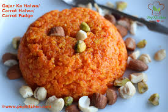

CARROT HALWA

Description
Carrot halwa Recipe is a popular Indian sweet also known as carrot pudding made using carrots, sugar, ghee and fried nuts.
Ingredients
The Ingredients of Carrot Halwa are:
- carrots
- sugar
- ghee
- fried nuts
- Milk Condensed
Steps
The instructions of making carrot halwa are:
- Heat ghee in a kadai. Now Add in grated carrot and saute. Pour in milk and mix well Simmer the flame and cover it with a lid. Let this cook for 15 mins until the carrot is cooked completely.
- Add in sugar and mix well. Cook this whole thing for 10 mins till the mix leaves the sides. Add in cardamom powder as well. Let this cook until the halwa gets thickened.
- Now heat some ghee. Fry mixed nuts till golden. Add in the nuts and mix well. Serve hot, warm or cold.